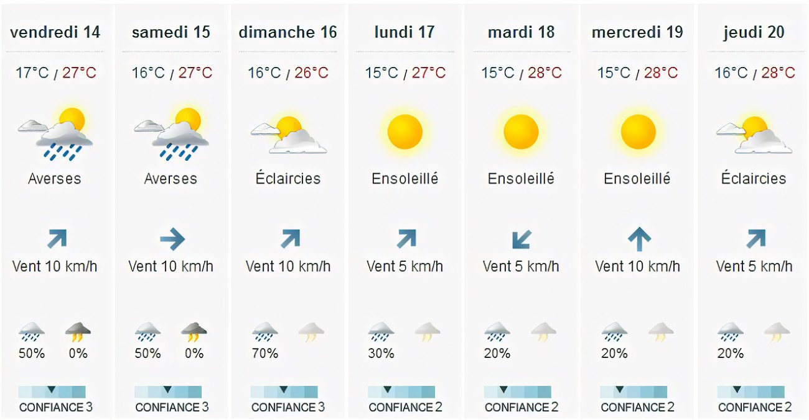

Nous allons, créer tout au long de ce projet une application météorologique.
Cette application affichera les prévisions météorologiques des jours à venir à montpellier.
Cependant, pour y parvenir nous avons séparé le travail en trois thème principale,
la première partie consisté à crée le site et de faire en sorte qu’elle soit fonctionnelle.
La seconde partie, nous allons créer voir une carte interactive de la ville de Montpellier
en fonction d’une couleur pour caractériser les différents aspects de la météo.
De ce fait nous aurrons à télécharger des données via un site météorologique.
Enfin, nous allons mettre en relation et fusionné tout nos données et probablement
un code qu’on aura mis en place afin de créer l’application.
Création d'une application de prévision météorologique
Les donées en une image
